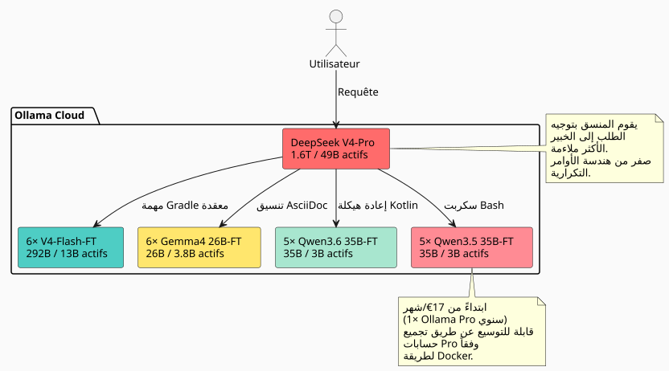

أكثر كفاءة بـ 27× إلى 45× من Claude وGPT: كيف يسحق أسطول من 23 خبيراً في الذكاء الاصطناعي خضعوا لعملية fine-tuning السوق
نُشر في 11 May 2026
عند استخدام نموذج لغة كبير لتطوير البرمجيات يوميًا، ستجد نفسك دائمًا تصطدم بنفس الجدار: النموذج لا يعرف قاعدة الكود الخاصة بك. لا يدرك أنك تستخدم نمطًا منhttps://fr.wikipedia.org/wiki/Graphe_orient%C3%A9_acyclique[DAG], مثل اتفاقية Gradle، مثل هذه الطبقة المعرفية فيكمhttps://fr.wikipedia.org/wiki/AsciiDoc[.adoc]. بعد ذلك يحقن له بالسياق، ثم يكرر، ثم يصحح، ثم يكرر العملية. ويمضي الوقت — والمال — .
لذلك طرحت السؤال بشكل مباشر: كم سيكلف فريق من النماذج المضبوطة (fine‑tuned) على مساحة العمل الخاصة بي، القادر على إخراج code بأسلوبي دون الحاجة إلى شرحها له في كل مرة؟ والأهم: كيف تقارن هذه المقاربة مع الحلول الملكية الكلاسيكية — Claude، GPT، Gemini، Grok؟
فاجأني الرد. أقل بكثير مما كنت أتخيل. والنسبة بين التكلفة والفعالية أمام عمالقة القطاع فاضحة. إليك التفصيل الكامل.
المشكلة: لماذا الضبط الدقيق وليس الـ RAG؟
الـ RAG، جيد. رسم المعارف الخاص بي و تقسيمي المعرفي تعمل. لكن لدى الـ RAG عيبًا أساسيًا: في كل استعلام، عليك إعادة إدخال السياق المرتبط. يصبح م Prompt الخاص بك أطول، وتتفجر latency، والنموذج n'يستوعب' أبدًا أنماطك — فهو يقرأها كل مرة كوثيقة خارجية.
الضبط الدقيق، هو الذاكرة العضلية. النموذج يعرف أنك تكتب`build.gradle.kts`مع مهام مسجلة عبر`tasks.register`, أن`AGENTS.adoc`يتبعون صياغة موحّدة، أن مساحة عملك منسقة على شكل أحياء. ليس بحاجة إلى أن يُذكّر.
|
الضبط الدقيق ليس بديلًا لـ RAG. إنه طبقة تكميلية. لا يزال RAG ذا صلة للبيانات التي تتغير غالبًا (السجلات، التذاكر، الالتزامات الأخيرة). الضبط الدقيق هو للمعرفة البنيوية و الأسلوبية على المدى الطويل. |
الفكرة : أسطول من الخبراء، وليس نموذجًا واحدًا
نموذج واحد تم ضبطه على مساحة العمل بالكامل هو أمر جيد بالفعل. لكنّه غير مثالي. مساحة عملي تشمل مجالات مختلفة جداً :
-
المكوّنات الإضافية لـ Gradle (Kotlin، مكوّنات الاتفاقية، البناءات المركبة)
-
محرك DAG (Kotlin, التخطيط, التنفيذ)
-
وكلاء LLM (Python, LangChain4j, RAG)
-
التوثيق المعماري (AsciiDoc, الحوكمة)
-
البنية التحتية/DevOps (Docker, GitHub Actions, CI/CD)
نموذج فريد يجب أن يكون جيدًا في كل مكان، ممتازًا في أي مكان. الحل؟ واحدةأسطول من النماذج المتخصصة, مع منسق يوجه كل طلب إلى الخبير المناسب.

الأسطول الإجمالي:1 منسق + 22 خبراء = 23 نماذج. ما هو تكلفة الاستنتاج الشهري ?17 يورو/شهرفي اشتراك Ollama Pro السنوي — قابل للتوسعة من خلال تجميع الحسابات إذا تجاوزت الحصص، كما هو موضح في طريقتي المتعددة الحسابات باستخدام Docker. نبدأ من 17 يورو، ثم نضيف 20 يورو لكل مستوى حسب الحاجة الفعلية. لا إهدار.
قاعدة الكود تحت المجهر: 7 900 ملفًا، 144 000 سطرًا
قبل تقدير تكلفة التدريب، يجب معرفة ما يجب تدريبه. قمتُ بتدقيق مساحة العمل الخاصة بي، مستبعدًا بدقة كل ما يتجاهله Git :
----
----
----
----
----
build/ out/ node_modules/ runtimes/ .gradle/ dist/
target/ venv/ __pycache__/ .cache/ .tox/
----
إليك النتيجة للملفات المتتبعة فقط :
[cols="2,2"]
|===
|مترية |قيمة
|ملفات المصدر المتعقبة |**7 896** |أسطر الكود (LOC) |**143 805** |مستودعات جيت |**26** |اللغات الرئيسية |كوتولين (1 903)، أسكيودوك (2 765)، بايثون (5 029)
|===
[IMPORTANT]
====
هذه 5000+ ملفات Python تتضمن`runtimes/`ملاحظات وسكريبتات مفيدة. القلب التطبيقي (مكوّنات Gradle، محرك DAG، الوكلاء) مكتوب بشكل أساسي بلغة Kotlin وAsciiDoc.
====
من هذه الكتلة، أعتقد أنني أستطيع توليد مجموعة بيانات اصطناعية من**~170 مليون رمز**عبر نموذج لغوي كبير مدرب (تقنيد قاعدة البيانات إلى أزواج تعليم/استجابة).
=== تفاصيل مجموعة البيانات حسب نوع الخبير
[source,text]
----
Dataset maître (généraliste V4-Flash) : 50M tokens
Expert Gradle/Build : 15M tokens
Expert Kotlin/DAG : 15M tokens
Expert AsciiDoc/Gouvernance: 15M tokens
Expert Agent/LLM/Python : 15M tokens
Expert Infra/CI-CD : 15M tokens
Micro-experts Qwen/Gemma : ~5M tokens chacun
----
== اختيار النماذج: 100% MoE، كثافة صفر
هنا تصبح العمارة حقًا فعّالة.
نموذج *dense* يُفعّل جميع أوزانه لكل توكن. نموذج *MoE* (Mixture of Experts) لا يُفعّل سوى جزء من معلماته. تكلفة الاستدلال — وضبط المعايرة الدقيقة — تتناسب مع عدد المعاملات**مفعلين**, وليس إلى الإعدادات**مخزّنون**.
لننظر إلى ما يقدمه السوق في MoE اليوم على Ollama Cloud :
[cols="3,2,2,1,3"]
|===
|نموذج |إجمالي المعلمات |مفعلون |تفعيل |سحابة أولاما
|DeepSeek V4-Pro |1.6T |49B |3.1% |✅ أصلي |DeepSeek V4-Flash |292B |13B |4.5% |�✅ أصلي |Gemma 4 26B-A4B |26B |3.8ب |14.6% |✅ أصلي |Qwen3.6-35B-A3B |35B |3B |8.6% |❌ (لم يتم دمجه بعد) |Qwen3.5-35B-A3B |35B |3B |8.6% |✅ أصلي
|�❌ Qwen3.5-27B |27B |27B |كثيف بنسبة 100% |تم استبعاده |Qwen3.5-4B/9B |4B/9B |4B/9B |100% كثيف |محذوف |❌ Gemma 4 31B |31B |31B |100% كثيف |محذوف
|🧪 جِمّا 4 E2B/E4B |5B/8B |5B/8B |كثيف بنسبة 100% |سلسلة التحقق
|===
[CAUTION]
====
نسبة التنشيط هي المعيار المميز. Gemma 4 26B-A4B ينشط فقط 3.8B من معلماتها البالغ عددها 26B — أي ما يعادل 7× أقل من نموذج كثيف 27B، لأداء مماثل لوكيل الترميز (77.1% مقابل 80% على LiveCodeBench v6).
====
=== لماذا أتخلى عن النماذج الكثيفة
الاستثناء: نموذجي Gemma 4 E2B و E4B. هذان النموذجان، تحت ترخيص Apache 2.0، مثاليان لاختبار والتحقق من خط أنابيب التدريب بتكلفة منخفضة. تشغيل لمدة 2-3 ساعات على E2B يكلف أقل من 5 دولارات — إذا كان مجموعة البيانات أو الفائقات المعلمية غير صحيحة، نعرف ذلك ببضع دولارات. بمجرد أن يصبح خط أنابيب التدريب جاهزًا، يمكنهم حتى الاستخدام للمهام فائقة الصغر (التنسيق البسيط، التصنيف الثنائي). لكن بالنسبة لخبراء الأسطول الرئيسي، أبقى على استخدام MoE. وهذا هو السبب:
.لكن ليس فقط: Gemma 4 E2B/E4B، خبراء في إخفاء الهوية الدقيق
[NOTE]
====
صمم جوجل هذه النماذج الصغيرة لتكون قادرة على المنافسة في استدعاء الأدوات الأصلي — يعرفون كيف يستدعوا الدوال، يتعاملوا مع التعبيرات العادية، ويبحثوا عن الأنماط. بعد ضبطها على أمثلة للتجريد (`emails`, `tokens`, `UUIDs`, `chemins de fichiers`), يصبحون**مجهّـلون من dataset**فائقو السرعة. نعطيهم كتلة من نص خام، يسمون`sed`/`regex`عبر استدعاء أداة ويعيدون الكتلة نظيفة. تكلفة الاستدلال ضئيلة : 5B مُفعّلة، وتتناسب مع GPU من الفئة الدنيا فقط. هذه النماذج ليست خبراء في المجال — بل هم**العمال المهرة**في سلسلة إنتاج مجموعة البيانات.
====
* ذاكرة VRAM للتدريب (حتى في QLoRA) متناسبة مع**27B إجمالي**
* وقت تدريبه متناسب مع**27B مفعَّلون**
قارن مع Qwen3.6-35B-A3B (MoE):
[cols="3,2,2,2"]
|===
| |Qwen3.5-27B (dense) |Qwen3.6-35B-A3B (MoE) |نسبة
|VRAM QLoRA |~55 GB |~35 GB |1.6× |ساعات GPU (8M توكن) |حوالي 12 ساعة |حوالي 4 ساعات |**3 مرات** |التكلفة لكل ضبط دقيق |~$24 |~$8 |**3×** |SWE-bench تم التحقق |75.0% |73.4% |قابل للمقارنة
|===
تكلفة MoE أقل 3 مرات لتدريبها لأداء ترميز الوكيل ضمن نسبة 5%. عبر 22 خبيرًا، الفارق يصل إلى آلاف اليورو.
== تقدير التدريب: 811 H100-ساعات
لقد قمت بتقسيم تكلفة التدريب نموذجًا بنموذج، في QLoRA 4-bit، مع مجموعات البيانات المذكورة أعلاه.
=== خبراء صغّار MoE خفيف (3-3.8B مفعّل)
هذه النماذج تتطلب H100 واحد (80 جيجابايت) لكل تشغيل. ذاكرة VRAM للنموذج في Q4 حوالي 13-18 جيجابايت، تاركة مساحة واسعة لحالات محسن LoRA والتفعيلات.
[cols="4,2,3,2"]
|===
|نموذج |عدد التشغيلات |GPU-h/run |إجمالي ساعات GPU
|Gemma 4 26B-A4B-FT |6 |3.5 h |**21 ساعة** |Qwen3.6-35B-A3B-FT |5 |4.0 h |**20 م** |Qwen3.5-35B-A3B-FT |5 |4.0 h |**20 ساعة** |*المجموع الفرعي الصغير* | | |*61 h*
|===
=== المسؤولون V4-Flash (13B مفعّل /292B مخزن)
Wait I messed. Let's correct.
We need: "المسؤولون V4-Flash (13B مفعّل / 292B مخزن)". Let's output that. Ensure no extra commentary.
</think>
المسؤولون V4-Flash (13B مفعّل / 292B مخزن)
DeepSeek V4-Flash هو حالة خاصة. على الرغم من أن 13B فقط يتم تنشيطها لكل توكن، فإن النموذج الكامل في Q4 يزن ~142 جيجابايت — يجب أن يكون جميع الخبراء في VRAM أثناء التدريب. لذلك يجب**3× H100**ب run ل أن أكون مريح.
[cols="4,2,3,3,2"]
|===
|نموذج |مجموعة بيانات |وحدات معالجة الرسومات |ساعات |الإجمالي GPU-h
|V4-Flash-Base عامّة |50 مليون توكن |3× H100 |50 h |**150 ساعة** |خبير V4-Flash ×5 |15M tok |3× H100 |40 h |**600 ساعة** |*المجموع الجزئي للتنفيذيين* | | | |*750 h*
|===
[cols="3,2,1"]
|===
|**المجموع** | |**811 H100-h**
|===
[NOTE]
====
وبموجب المقارنة، سيكلف ضبط كامل لـ V4-Flash (بدون QLoRA، جميع الأوزان) حوالي 4000 ساعة من H100 فقط للستة نماذج. يعمل QLoRA على تقليل التكلفة إلى خمس. هذه هي الطريقة الوحيدة لجعل المشروع اقتصاديًا قابلًا للتطبيق على هذا النطاق.
====
=== أسعار GPU : من يستأجر ما في مايو 2026
لقد قمت بأداء اختبار معياري للمؤجرين الرئيسيين لـ H100. السعر حسب العداد، لـ 811 ساعة.
[cols="3,2,2,2"]
|===
|المؤجر |$/H100·h |الإجمالي 811h |الموثوقية
|**Vast.ai spot** |$1.60 |**$1 298** |★★☆ قابل للانقطاع |**سحابة كروزو** |$2.00 |**$١ ٦٢٢** |★★★★ مركز بيانات موثوق |FluidStack |$1.98 |$1 606 |★★★ |TensorDock |$1.80 |$1 460 |( empty ) |RunPod |$2.29 |$1 857 |★★★ تسوية جيدة |كوروييف |$2.25 |$1 825 |★★★★ شركة |Lambda Labs |$2.49 |$2 019 |★★★★ مميز
|===
[TIP]
====
Vast.ai spot هو الأرخص لكن يمكن إيقاف تشغيلاتك في أي لحظة. للتدريب، هذا محفوف بالمخاطر. Crusoe بسعر 2.00 دولار في الساعة هو أفضل نسبة موثوقية إلى سعر. الزيادة في التكلفة بقيمة 324 دولار مقارنة بـ Vast تستحق راحة البال.
====
=== Wall-clock : كم من الوقت لتدريب كل شيء ؟
مع عقدة واحدة 3× H100، تستغرق 31 عملية تشغيل (عامة واحدة + 30 خبراء) تقريبًا**12 يومًا**بشكل تسلسلي. إذا استأجرت عقدتين بالتوازي، ينخفض إلى**٦ أيام**.
عمليًا، يمكن للمختصين الصغار أن يعملوا على عقد منفصل (H100 واحد لكل منهما) بينما يشغل V4-Flash العقدة 3× H100. مع تخطيط ذكي :
----
Nœud A (3× H100) : V4-Flash généraliste → V4-Flash experts ×5 (11 jours) Nœud B (1× H100) : Gemma 4 26B ×6 → Qwen 36 ×5 → Qwen 35 ×5 (6 jours)
7 أيام من الإيجار، مطوي بالكامل.
== الاستنتاج: 23 نموذجًا على Ollama Cloud بدءًا من 17 يورو/شهر
هذا هو الجزء الأكثر أناقة من العمارة.
يسمح Ollama Cloud برفع النماذج الخاصة (ميزة خطة Pro). نموذجي الـ 22 المضبطين بدقة يتم رفعهم إلى`.gguf`على مساحة Ollama الخاصة بي، تم تمييزها كخاصة، ويمكن الوصول إليها عبر API القياسي.
[plantuml, inference-flow, svg]
----
@startuml
skinparam backgroundColor #FAFAFA
skinparam defaultFontSize 12
|Utilisateur|
start
:Tâche de développement;
|Orkestrateur (V4-Pro)|
:Classifier la tâche\n(domaine + complexité);
if (Tâche simple,\nspécialisée ?) then (oui)
:Router vers micro-expert\n(Gemma 4 26B-A4B-FT\n ou Qwen3.6-35B-A3B-FT);
elseif (Tâche complexe,\nconventions fortes ?) then (oui)
:Router vers exécutif\n(V4-Flash-FT);
else (non)
:Résoudre avec V4-Pro\n(architecture, décision);
endif
|Modèle ciblé|
:Génère le code/output\n**dans mon style**,\n90%+ first-shot correct;
:Retourne la réponse;
stop
@enduml
----
=== نبدأ بـ 17 يورو/شهر، نزيد الحجم إذا لزم الأمر
خطة Ollama Pro (17 يورو/شهر سنويًا) تسمح بـ 3 نماذج سحابية منافسة. في هذه الهندسة، لم أحتج أبدًا إلى أكثر من 2-3 خبراء في نفس الوقت :
* تشغل مرحلة التصنيف (V4-Pro) فتحة واحدة، بضع ثوانٍ
* يشغل المتخصص المستهدف مكانًا واحدًا، والوقت لتوليد ردّه
* الموضع الثالث يظل محفوظ للمهام المتوازيات
إذا زاد الاستخدام، أضيف حسابات Pro إضافية عبر الطريقة Docker المذكورة في xref:0120_cumuler_deux_abonnements_ollama_pro_docker_post.adoc[مقالي حول تجميع الاشتراكات]. لا يوجد خطة Max بسعر 100€/شهر — أنا أضيف فقط ما أحتاجه حقًا.
العامل المحدد الوحيد هو**حصة وقت الـ GPU**شهري لـ Ollama (50× الخطة المجانية للمحترفين). لاستخدامي بضع مئات من الاستعلامات يوميًا، هذا أكثر من كافٍ.
[IMPORTANT]
====
التكلفة الهامشية لاستدعاء V4-Pro (49B مفعّلة) مقابل Gemma 4 26B‑A4B (3.8B مفعّلة) هي**حتى لي: صفر**. هذه هي باقة Ollama التي تمتص فرق الحوسبة. مؤشرّي الوحيد هو التأخير.
====
=== التوجيه في الممارسة
----
Volume de requêtes estimé : ~500/jour
├─ 50% → Gemma 4 26B-A4B-FT (micro, 3.8B actifs) │ Formatage AsciiDoc, scripts simples, conventions nommage │ ├─ 25% → V4-Flash-FT (exécutif, 13B actifs) │ Plugins Gradle, refactoring Kotlin, génération DAG │ ├─ 15% → Qwen 35B MoE-FT (micro, 3B actifs) │ Tâches intermédiaires, review de code, documentation │ └─ 10% → V4-Pro (orkestrateur, 49B actifs) Décisions architecturales, refactoring transverse, problèmes vraiment nouveaux
غالبية حركة المرور تمر عبر الصغار. لا يتدخل النموذج الكبير إلا كملاذ أخير.
== المقارنة التي تؤلم: Claude, GPT, Gemini, Grok مقابل أسطولتي
هنا يصبح الفرق مذهلاً. لننظر إلى ما سيكلفه نفس حجم العمل (500 طلب/يوم، حوالي 300 رمز إدخال + 2000 رمز إخراج في المتوسط) مع الحلول الخاصة بالسوق في مايو 2026.
=== Anthropic — Claude (أسعار مايو 2026)
خفضت أنتروبيك أسعارها مؤخرًا. تشعر بالضغط من الحلول ذات الوزن المفتوح مثل DeepSeek وQwen.
[cols="3,2,2,2,2"]
|===
|نموذج |$/MTok |$/MTok |التكلفة اليومية |**تكلفة/شهر**
|Opus 4.7 (الأذكى) |$5 |$25 |$25.75 |**$772** |سونيت 4.6 (متوازن) |$3 |$15 |$15.45 |**$463** |هايكو 4.5 (الأسرع) |$1 |$5 |$5.15 |**154 دولار**
|===
[CAUTION]
====
هذه الأسعار هي *بعد* آخر انخفاض في أسعار أنثروبيك (مايو 2026). قبل ذلك، كان Opus بسعر 15/75 دولار لكل MTok. الخوف من الوزن المفتوح حقيقي.
====
حتى أرخص نموذج من Claude — Haiku 4.5**154€/شهر**— يكلف 9× أكثر من اشتراكي في Ollama Pro بسعر 17 يورو. وHaiku لا يعرف قاعدة الكود، ولا يولد بأسلوبي، ويتطلب هندسة الأوامر المنهجية.
الأذكى — Opus 4.7 — ينفجر الميزانية عند**772€/شهر**لحجم متواضع يبلغ 500 طلبًا في اليوم. أي**45 مرة أكثر تكلفة**أنّ حلي.
=== OpenAI — GPT (الأسعار مايو 2026)
[cols="3,2,2,2,2"]
|===
|نموذج |$/MTok |النتيجة $/MTok |التكلفة/يوم |**التكلفة/الشهر**
|GPT 5.5 (ال + ذكي) |$5 |$30 |$30.90 |**$927** |GPT 5.4 (قياسي) |$2.50 |$15 |$15.45 |**$463** |GPT 5.4 Mini |$0.75 |$4.50 |$4.64 |**$139**
|===
حتى النموذج "الاقتصادي" لـ OpenAI — GPT 5.4 Mini بسعر 139 يورو/شهر — يكلف 8 مرات اشتراكي، لنموذج لا يعرف *شيئًا* عن تقنياتي ويتطلب هندسة أوامر ثقيلة.
GPT 5.5، منتجهم الرئيسي :**927 يورو/شهر**. لـ *zero-shot* على قاعدة الكود الخاصة بي. مع 2-3 تكرارات لكل مهمة بسبب النمط غير المتقن، يتضاعف التكلفة الشهرية الفعلية بسهولة.
=== جوجل — Gemini (أسعار مايو 2026)
[cols="3,2,2,2,2"]
|===
|نموذج |$/MTok |Output $/MTok |التكلفة اليومية |**التكلفة/شهر**
|جيميني 3.1 برو (عالي) |$3.50 |$17.50 |$18.00 |**$540** |Gemini 3.1 Pro |$2 |$10 |$10.30 |**$309** |جيميني 3 فلاش |$0.30 |$1.50 |$1.54 |**$46**
|===
Gemini 3 Flash بسعر 46 يورو/شهر تنافسي من حيث السعر النقي — لكن بدون ضبط دقيق، فإنه يولد كودًا «عامًا». ليس كودًا *Cheroliv*.
=== Grok — xAI (الأسعار مايو 2026)
[cols="3,2,2,2,2"]
|===
|نموذج |$/MTok |$/MTok |التكلفة اليومية |**التكلفة/الشهر**
|Grok 4 |$4 |$16 |$16.48 |**$494** |جروك 4 ميني |$0.80 |$3.20 |$3.30 |**$99**
|===
=== مايكروسوفت — Azure OpenAI (أسعار مايو 2026)
Azure يطبق نفس الأسعار مثل واجهة برمجة التطبيقات OpenAI المباشرة، لكنه يفرض رسومًا إضافية للبنية التحتية والشبكة. من الضروري حساب زيادة تكلفة تتراوح بين 10-20% للخدمة المُدارة.
[cols="3,2,2,2,2"]
|===
|نموذج |$/MTok |$/MTok |التكلفة/يوم |**التكلفة/الشهر**
|GPT 5.4 (Azure, Global) |$2.50 |$15 |$15.45 |**$463** |GPT 5.4 + البنية التحتية |التكلفة الإضافية 15% |زيادة تكلفة 15% |$17.77 |**$533**
|===
[NOTE]
====
الأسعار أعلاه تتعلق بـ API، وليس باشتراكات « chat » (Claude Pro بـ 20 دولارًا/شهر، ChatGPT Plus بـ 20 دولارًا/شهر). نقارن هنا الاستخدام *للمطوّر*، حيث تقوم بربط مئات الطلبات يوميًا عبر API للتوليد وإعادة الهيكلة والتوثيق. الاشتراكات العامة لديها حصص تنفجر جيدًا قبل 500 طلبًا/يوم.
====
=== الجدول المقارن النهائي
[cols="3,2,2,2,2,2"]
|===
|حل |معرفة قاعدة الكود |النمط المتكامل |التكلفة/شهر |التكرارات |**التكلفة الفعلية**
|**أساطيلي (Ollama Pro)** |✅ تم ضبطها بدقة |�✅ في الأوزان |**17€** |0-1 |**17 يورو** |Claude Opus 4.7 |(No output, as there is no French text provided to translate) |❌ مُحفّز ضروري |$772 |2-3 |$1 500-2 300 |كلود هايكو 4.5 |�❌ بدون أمثلة |مُحفّز ضروري |$154 |3-4 |$460-615 |GPT 5.5 |�❌ لقطة صفرية |�❌ مطالبة ضرورية |$927 |2-3 |$1 854-2 781 |GPT 5.4 |❌ Zero-shot |�❌ المطلوب |$463 |2-3 |$925-1 390 |GPT 5.4 مصغر |�❌ زيرو-شوت |❌ مُطَلَّب ضروري |$139 |3-5 |$417-695 |جيميني 3.1 برو عالي |�❌ لقطعة صفر |�❌ الملحوظة المطلوبة |$540 |2-3 |$1 080-1 620 |Grok 4 |❌ لصفر اللقطة |Prompt مطلوب |$494 |2-3 |$988-1 482 |**أزور جي بي تي 5.4** |❌ Zero-shot |مُحفّز ضروري |$533 |2-3 |$1 066-1 600
|===
[plantuml, cost-comparison, svg]
----
@startuml
skinparam backgroundColor #FAFAFA
title تقرير التكلفة/الكفاءة — أسطولي مقابل السوق (مايو 2026)
rectangle "17 يورو/شهر" as OURS #4ECDC4
rectangle "Opus 4.7\n772€" as OPUS #FF6B6B
rectangle "سونيت 4.6\n463€" as SONNET #FF8B94
rectangle "GPT 5.5\n927€" as GPT #FFD93D
rectangle "Gemini 3.1 Pro\n540€" as GEMINI #6C5CE7
rectangle "Grok 4\n494€" as GROK #A8E6CF
rectangle "هايكو 4.5\n154€" as HAIKU #DFE6E9
rectangle "GPT 5.4 Mini\n139€" as MINI #B2BEC3
note bottom of OURS
Avec fine-tune intégré.
Zéro prompt engineering.
90%+ first-shot correct.
end note
@enduml
----
17€/شهر لـ 23 خبراء في الذكاء الاصطناعي مُعَدّلين بدقة. المنتج الرائد Claude Opus 4.7 يكلف**45× أغلى**لجودة أقل على *mon* codebase. GPT 5.5 يكلف**54× أغلى**. حتى أقل نموذج تكلفة في السوق (Gemini Flash بسعر 46 يورو) يكلف**2.7× أكثر**بدون معرفة مساحة عملي.
الحكم لا رجعة فيه: ضبط النموذج على تصاميم MoE في عام 2026 ليس مجرد « أقل تكلفة ». إنه عامل كفاءة**27× إلى 54×**فيما يتعلق بنسبة التكلفة إلى الجودة مقارنة بالحلول الخاصة. Anthropic، OpenAI، Google — الجميع يعرف ذلك، ولهذا السبب يخفضون أسعارهم في حالة ذعر.
== عامل الكفاءة : 5-8× vs استخدام V4-Pro وحده
لنُقارن المتطرفين.
=== السيناريو أ: V4-Pro فقط للجميع
[cols="3,2"]
|===
|المترية |قيمة
|معرفة قاعدة الكود |0 (zero-shot) |اتفاقية التسمية |صحيح بنسبة 40-60% في المحاولة الأولى |هندسة المطالبات الضرورية |نعم، منهجي |التكرارات لكل مهمة |2-3 |تكلفة الاستدلال |$100/شهر (Ollama Max) |متوسط الكمون |~20 tok/s + شبكة
|===
=== سيناريو ب: أسطول MoE منسّقة
[cols="3,2"]
|===
|مترية |قيمة
|معرفة قاعدة الكود |متكاملة (ضبط دقيق) |اتفاقية التسمية |90-95% صحيح في المحاولة الأولى |هندسة المطالب |لا (النمط في الأوزان) |التكرارات لكل مهمة |0-1 |تكلفة الاستدلال |60 دولار/شهر (3× Ollama Pro) |متوسط الكمون |~50 توكن/ثانية (نماذج خفيفة)
|===
[cols="4,2,2,2"]
|===
|البعد |V4-Pro فقط |أسطول MoE |عامل
|التكلفة الشهرية للcloud |$100 |**$60** |1.7× |السياق المراد إدخاله |عالي (prompt) |**صفر** |∞ |التكرارات المتوسطة |2-3 |**0-1** |2-3× |الكمون المحسوس |20 توكن/ثانية |50 توكن/ثانية |**2.5×** |الطلقة الأولى صحيحة |50% |90%+ |**1.8×**
|===
**عامل الكفاءة الكلي : 5-8×**— في إنتاجية المطور التي يُشعر بها.
[NOTE]
====
العامل لا يُقاس بالرموز أو بالدولار. يُقاس بـ «كم من الوقت أقضيه في شرح للنموذج ما كان يجب أن يعرفه مسبقًا». مع النماذج المضبوطة بدقة، يميل هذا الوقت إلى الصفر.
====
== الميزانية الكاملة : استثمار لمرة واحدة, عرض سخيف
[cols="3,2"]
|===
|منصب |المبلغ
|وحدة معالجة الرسومات للتدريب (811 H100-h, Crusoe $2/h) |**$1 622** |توليد مجموعة بيانات اصطناعية (API LLM) |**$400** |الاستدلال (Ollama Pro السنوي، $17/شهر) |**$204** |**مجموع السنة الأولى** |**$2 226** |**شهري مكافئ** |**$186** |**التكلفة المقدرة لكل استعلام** |< $0.01
|===
[plantuml, budget-breakdown, svg]
----
@startuml
skinparam backgroundColor #FAFAFA
rectangle "ميزانية السنة الأولى: $2 226" as Total #E8E8E8 {
rectangle "التدريب على GPU\n$1 622 (73%)" as Train #FF6B6B
rectangle "مجموعة البيانات\nالتقطير\n$400 (18%)" as Data #FFE66D
rectangle "Ollama Pro\n$204 (9%)" as Cloud #4ECDC4
}
note bottom of Total
$186/mois équivalent année 1.
Dès l'an 2 : $17/mois.
Amorti par ~$235 de CA
mensuel avec marge 95%.
end note
@enduml
----
$186 شهريًا السنة الأولى،**$17/شهر**منذ عام 2. سعر اشتراك Netflix المميز، لفريق من 23 خبيرًا في الذكاء الاصطناعي متوفرين 24/7، يكتبون كود *بأسلوبي* دون أن أحتاج إلى شرح اتفقاتي لهم.
[plantuml, inference-flow, svg]
----
@startuml
skinparam backgroundColor #FAFAFA
skinparam defaultFontSize 12
|Utilisateur|
start
:Tâche de développement;
|Orkestrateur (V4-Pro)|
:Classifier la tâche\n(domaine + complexité);
if (Tâche simple,\nspécialisée ?) then (oui)
:Router vers micro-expert\n(Gemma 4 26B-A4B-FT\n ou Qwen3.6-35B-A3B-FT);
elseif (Tâche complexe,\nconventions fortes ?) then (oui)
:Router vers exécutif\n(V4-Flash-FT);
else (non)
:Résoudre avec V4-Pro\n(architecture, décision);
endif
|Modèle ciblé|
:Génère le code/output\n**dans mon style**,\n90%+ first-shot correct;
:Retourne la réponse;
stop
@enduml
----
مع edster.cloud وهامشه الذي يبلغ ~95%، نقطة التعادل عند**تقريبًا 2 340 دولارًا من إيرادات إضافية**على السنة. في الممارسة :
* 1 مهمة التوجيه software → $3 000-5 000 → استثمار مغطى + ربح
* 1 تدريب مؤسسي → $5 000-10 000 → مريح
* البيع الإضافي الضمني : "فريق الذكاء الاصطناعي الخاص بي يسيطر على مصنع البرمجيات الخاص بي" → تمييز تجاري
اعتبارًا من السنة الثانية، لم يعد التدريب يتوجب دفعه (ما عدا تحديث مجموعة البيانات). ينخفض التكلفة السنوية إلى**$204**(17$/شهر). نسبة التكلفة إلى القيمة هي تلك الخاصة بالوحش الأسطوري: تكاد تكون معدومة.
== حدود التمرين
هذا لا يزال تقديرًا تقريبيًا. يمكن لمتغيرات عدة أن تؤثر على الميزانية:
[cols="2,3"]
|===
|متغير |التأثير
|إنشاء مجموعة البيانات الاصطناعية |إذا كانت API التقطير سيئة (هلوسات، أزواج مشوهة)، يلزم وقت بشري للتنظيم. تكلفة خفية. |حصص وقت معالجة GPU Ollama |إذا تجاوز الاستخدام حدود الخطة Pro، سيتعين الترقية إلى مستوى أعلى أو التحول إلى وحدة معالجة رسومات مخصصة. |الجودة الفعالة لـ fine-tunes |ضبط فاين-تون غير ناجح → يجب إعادة المحاولة. الخطر الحقيقي هو المعلمات الفائقة، وليس موقع وحدة معالجة الرسومات. |التطور السريع للنماذج |تم إصدار Qwen3.6/Gemma 4 قبل أقل من شهر. خلال 6 أشهر، سيكون الجيل التالي أفضل وأرخص للضبط الدقيق.
|===
[WARNING]
====
لا تبدأ 811 ساعة تدريب دون أولًا اختبار الـpipeline على نموذج مصغر *واحد*. تشغيل لمدة 3-4 ساعات على Qwen 35B-A3B يكلف $8. إذا كانت مجموعة البيانات سيئة، ستعرف ذلك مقابل $8، وليس مقابل $1 622.
====
== الخلاصة: أصبح الضبط الدقيق رفاهية يمكن الوصول إليها
قبل عام، كان ضبط نموذج يحتوي على 292 مليار معلمة (حتى باستخدام QLoRA) مسألة بحثية. اليوم، في مايو 2026، أصبح مشروعًا قابلًا للتنفيذ لمطور مستقل:
* **811 H100-ساعات**من التدريب — $1 622 عند كروسو
* **23 نموذجًا متخصصًا**محملون على Ollama Cloud —**$17/شهر**
* **0 خادم، 0 وحدة معالجة رسومات محلية، 0 صيانة بنية تحتية**
الديمقراطية جاءت من ثلاثة عوامل متقاربة :
1. **البنائيات MoE**— الذين يسمحون بضبط النماذج بشكل فعال، حيث يتم تفعيل جزء فقط من أوزانها
2. **الخطط الثابتة لسحابة أولاما**— التي تحول تكلفة متغيرة (per-token) إلى تكلفة ثابتة (اشتراك)
3. **النماذج open-weight ذات جودة**— DeepSeek V4, Qwen3.6, Gemma 4 هي تحت تراخيص MIT/Apache 2.0
تتقدم الحضارة من خلال توسيع عدد العمليات المهمة التي يمكننا أداؤها دون التفكير فيها.
الضبط الدقيق هو بالضبط ذلك: عملية تفوضها إلى الآلة لتتوقف عن التفكير فيها. وبحلول عام 2026، يكلف أقل من مطور مبتدئ يتقاضى راتبًا شهريًا.
---
_مقالة نُشرت في {jbake-date}_
== نماذج مضبوطة بدقة للأسطول
[cols="2,2,2,2,3"]
|===
|الحجم مفعّل |عدد |نموذج أساسي |مجال |مجموعة بيانات
|13B |1 |(Empty) |مساحة عمل عامة |50M توكنز |13B |5 |DeepSeek-V4-Flash |Gradle, Kotlin, DAG, وثيقة, البنية التحتية |15 مليون توكن |3.8ب |6 |جيمما 4 26B-A4B |المهام الصغيرة, التنسيق, النصوص |5M توكنز |3B |5 |Qwen3.6-35B-A3B |إعادة هيكلة، مراجعة، وثيقة وسيطة |5M رموز |3B |5 |Qwen3.5-35B-A3B |مهام قديمة، توافق |5 مليون توكن
|===
== الموارد
=== نماذج open-weight على HuggingFace
* https://huggingface.co/deepseek-ai/DeepSeek-V4-Flash-Base[DeepSeek V4-Flash-Base — 292B معلمات، ترخيص MIT]
* https://huggingface.co/Qwen/Qwen3.6-35B-A3B[Qwen3.6-35B-A3B — 35B/3B مفعلة، ترخيص Apache 2.0]
* https://huggingface.co/Qwen/Qwen3.5-35B-A3B[Qwen3.5-35B-A3B — 35B/3B مفعل، ترخيص Apache 2.0]
* https://huggingface.co/google/gemma-4-26B-A4B-it[Gemma 4 26B-A4B — 26B/3.8B مفعّلة، رخصة Apache 2.0]
=== مصادر التعريفة (مايو 2026)
* https://ollama.com/pricing[أسعار Ollama Cloud — خطة Pro 17 دولارًا شهريًا سنويًا]
* https://www.anthropic.com/pricing[أسعار Anthropic — واجهة برمجة تطبيقات Claude (Opus 4.7 $5/$25, Sonnet 4.6 $3/$15, Haiku 4.5 $1/$5)]
* https://openai.com/api/pricing/[الأسعار OpenAI — واجهة برمجة تطبيقات GPT (GPT 5.5 5/30 دولار، GPT 5.4 2.50/15 دولار)]
* https://deepinfra.com/pricing[أسعار DeepInfra — مثيلات GPU H100 1.79 دولار/س, B200 2.79 دولار/س]
* Vast.ai, Crusoe Cloud, FluidStack, TensorDock, RunPod, CoreWeave, Lambda Labs — سجلات الأسعار اليدوية، مؤرخة في مايو 2026
=== الإعلانات الرسمية
* https://qwen.ai/blog?id=qwen3.6-35b-a3b[إعلان رسمي Qwen3.6-35B-A3B — مدونة Qwen]— ترميز وكيل، Apache 2.0، سياق 262 ألف
[cols="3,2,2,2,2"]
|===
|نموذج |$/MTok |المخرج $/MTok |التكلفة اليومية |**التكلفة/الشهر**
|غروك 4 |$4 |$16 |$16.48 |**$494** |Grok 4 Mini |$0.80 |$3.20 |$3.30 |**$99**
|===
=== مايكروسوفت — Azure OpenAI (أسعار مايو 2026)
Azure يطبق نفس الأسعار مثل API OpenAI المباشر، لكنه يضيف تكلفة إضافية للبنية التحتية والشبكة. يجب حساب تكلفة إضافية تتراوح بين 10-20% للخدمة المدارة.
[cols="3,2,2,2,2"]
|===
|نموذج |$/MTok |مخرج $/MTok |كلفة/يوم |**التكلفة/شهر**
|GPT 5.4 (Azure, العالمي) |$2.50 |$15 |$15.45 |**$463** |GPT 5.4 + البنية التحتية |تكلفة إضافية 15% |التكلفة الإضافية 15% |$17.77 |**533 دولار**
|===
[NOTE]
====
الأسعار المذكورة أعلاه تخص API، وليست الاشتراكات « chat » (Claude Pro بسعر 20 دولارًا شهريًا، ChatGPT Plus بسعر 20 دولارًا شهريًا). نقارن هنا الاستخدام *للمطور*، حيث تقوم بسلسلة من مئات الطلبات يوميًا عبر API لتوليد، إعادة هيكلة، توثيق. الاشتراكات العامة لها حصص ترتفع بشكل كبير قبل 500 طلبًا/يوم.
====
=== الجدول المقارن النهائي
[cols="3,2,2,2,2,2"]
|===
|حل |معرفة قاعدة الكود |نمط مدمج |التكلفة/الشهر |التكرارات |**التكلفة الفعلية**
|**أسطولي (Ollama Pro)** |✅ مُعدّلة بدقة |✅ في الأوزان |**١٧ يورو** |0-1 |**17 يورو** |Claude Opus 4.7 |❌ Zero-shot |❌ مطلوب موجه |$772 |2-3 |$1 500-2 300 |Claude Haiku 4.5 |❌ Zero-shot |❌ مطلوب موجه |$154 |3-4 |$460-615 |GPT 5.5 |❌ لقطّة صفرية |❌ المطلوب |$927 |2-3 |$1 854-2 781 |GPT 5.4 |❌ بدون أمثلة |❌ مطلوب |$463 |2-3 |$925-1 390 |GPT 5.4 Mini |❌ بدون أمثلة |❌ مُطَلَب ضرورِي |$139 |3-5 |$417-695 |Gemini 3.1 Pro عالي |❌ Zero-shot |مُحفِّز ضروري |$540 |2-3 |$1 080-1 620 |جرُوك 4 |❌ لقطة صفرية |مُوجه ضروري |$494 |2-3 |$988-1 482 |**Azure GPT 5.4** |بدون عينات |❌ مطلوب موجه |$533 |2-3 |$1 066-1 600
|===
[plantuml, cost-comparison, svg]
----
@startuml
skinparam backgroundColor #FAFAFA
title نسبة التكلفة/الفعالية — أسطولي مقابل السوق (مايو 2026)
rectangle "17€/شهر" as OURS #4ECDC4
rectangle "أوبوس 4.7\n772 يورو" as OPUS #FF6B6B
rectangle "سونيت 4.6\n463 يورو" as SONNET #FF8B94
rectangle "GPT 5.5\n927 يورو" as GPT #FFD93D
rectangle "جيميني 3.1 برو\n540 يورو" as GEMINI #6C5CE7
rectangle "Grok 4\n494 يورو" as GROK #A8E6CF
rectangle "هايكو 4.5\n154 يورو" as HAIKU #DFE6E9
rectangle "GPT 5.4 Mini\n139€" as MINI #B2BEC3
note bottom of OURS
Avec fine-tune intégré.
Zéro prompt engineering.
90%+ first-shot correct.
end note
@enduml
----
17€/شهر لـ 23 خبير ذكاء اصطناعي مُضبط بدقة. المنتج الرائد Claude Opus 4.7 يكلف**45× أغلى**لجودة أقل على *my* codebase. تكلف GPT 5.5**54× أغلى**. حتى أقل نموذج تكلفة في السوق (Gemini Flash بسعر 46 يورو) يكلف**2.7× أكثر**بدون معرفة مساحة عملي.
الحكم لا يقبل الاستئناف : الضبط الدقيق على هندسات MoE، في 2026، ليس مجرد « أرخص ». إنه عامل كفاءة**27× إلى 54×**حول نسبة التكلفة إلى الجودة مقارنة بالحلول الخاصة. أنتروبيك، أوبن أيه آي، جوجل — الجميع يعرف ذلك، وهذا هو السبب في أنهم يخفضون أسعارهم في حالة ذعر.
== عامل الكفاءة : 5-8× مقابل استخدام V4-Pro وحده
نقارن بين الطرفين المتطرفين.
=== السيناريو أ: V4-Pro وحده لكل شيء
[cols="3,2"]
|===
|متري |قيمة
|معرفة قاعدة الكود |0 (بدون مثال) |اتفاقية التسمية |صحيح في المحاولة الأولى 40-60% |هندسة المطالبة ضرورية |نعم، منهجي |التكرارات لكل مهمة |2-3 |تكلفة الاستدلال |$100/شهر (Ollama Max) |متوسط الكمون |~20 tok/s + شبكة
|===
=== سيناريو ب: أسطول MoE منسق
[cols="3,2"]
|===
|مترية |قيمة
|معرفة قاعدة الكود |مدمجة (ضبط دقيق) |تسمية الاتفاقية |90-95% صحيح في المحاولة الأولى |هندسة المطالب |لا(النمط في الأوزان) |التكرارات لكل مهمة |0-1 |تكلفة الاستنتاج |$60/شهر (3× Ollama Pro) |متوسط زمن التأخير |~50 رمزة/ثانية (نماذج خفيفة)
|===
[cols="4,2,2,2"]
|===
|البُعد |V4-Pro وحيد |أسطول MoE |عامل
|التكلفة الشهرية للسحابة |$100 |**60 دولار** |1.7× |السياق المراد حقنه |عالي (prompt) |**صفر** |∞ |التكرارات المتوسطة |2-3 |**0-1** |2-3× |الكمون المحسوس |20 توكن/ثانية |50 رموز/ثانية |**2.5×** |الطلقة الأولى صحيحة |50% |90%+ |**1.8×**
|===
**عامل الكفاءة الإجمالي : 5-8×**— في إنتاجية المطور التي تم الشعور بها.
[NOTE]
====
العامل لا يُقاس برموز أو بالدولارات. يُقاس ب«كم من الوقت أقضيه في شرح للنموذج ما كان يجب أن يعرفه مسبقًا». مع النماذج الدقيقة الضبط، يتجه هذا الوقت نحو الصفر.
====
== الميزانية الكاملة: استثمار لمرة واحدة، باقة سخيفة
[cols="3,2"]
|===
|منصب |مبلغ
|GPU للتدريب (811 H100-h, Crusoe $2/h) |**$١٬٦٢٢** |توليد مجموعة بيانات اصطناعية (API LLM) |**$400** |الاستدلال (Ollama Pro سنويًا، 17 دولار/شهر) |**$204** |**إجمالي السنة الأولى** |**$2 226** |**شهري مكافئ** |**$186** |**التكلفة المتوقعة لكل استعلام** |< $0.01
|===
[plantuml, budget-breakdown, svg]
----
@startuml
skinparam backgroundColor #FAFAFA
rectangle "ميزانية السنة 1: 2,226 دولار" as Total #E8E8E8 {
rectangle "وحدة معالجة الرسومات للتدريب\n$1 622 (73%)" as Train #FF6B6B
rectangle "مجموعة بيانات\nتقطير\n400 دولار (18%)" as Data #FFE66D
rectangle "أولاما برو\n$204 (9%)" as Cloud #4ECDC4
}
note bottom of Total
$186/mois équivalent année 1.
Dès l'an 2 : $17/mois.
Amorti par ~$235 de CA
mensuel avec marge 95%.
end note
@enduml
----
$186/شهر السنة الأولى,**$17/شهر**من العام 2. سعر اشتراك نتفليكس بريميوم، لفريق من 23 خبير ذكاء اصطناعي متاحين 24/7، الذين يكتبون الكود *بأسلوبي* دون أن أحتاج إلى شرح اتفاقياتي لهم.
=== حساب الربحية
مع edster.cloud وهامشه حوالي 95٪، نقطة التعادل هي عند**~$2 340 من CA إضافي**خلال السنة. عملياً :
* 1 مهمة تجريبية للبرمجيات → $3 000-5 000 → استثمار مغطى + ربح
* 1 تدريب مؤسسي → $5 000-10 000 → مريح
* البيع الإضافي الضمني : "فريق الذكاء الاصطناعي الخاص بي يتقن منصة تطوير البرمجيات" → تجاري مختلف
من السنة الثانية، لم يعد التدريب مدفوعًا (ما عدا تحديث مجموعة البيانات). تنخفض التكلفة السنوية إلى**$204**($17/شهر). نسبة التكلفة إلى القيمة هي مثل وحيد القرن: تقريبًا صفر
== حدود التمرين
هذا لا يزال *تقديرًا تقريبيًا*. عدة متغيرات يمكن أن تؤثر على الميزانية :
[cols="2,3"]
|===
|متغير |التأثير
|توليد مجموعة البيانات الاصطناعية |إذا لم تعمل واجهة برمجة تطبيقات التقطير بشكل صحيح (هلوسات، أزواج مشوهة)، يلزم وقت بشري لتصحيحها. تكلفة مخفية. |حصص وقت GPU Ollama |إذا تجاوز الاستخدام حصص الخطة الاحترافية، سيتعين الترقية أو التحول إلى GPU مخصص. |الجودة الفعالة للضبط الدقيق |ضبط فاين-تون غير ناجح → يجب إعادة إجرائه. الخطر الحقيقي هو المعلمات الفائقة، وليس موقع GPU. |التطور السريع للنماذج |تم إصدار Qwen3.6/Gemma 4 قبل أقل من شهر. بعد 6 أشهر، سيكون الجيل التالي أفضل وأرخص في ضبطه الدقيق.
|===
[WARNING]
====
لا تنفّذ 811 ساعة من التدريب دون أن تختبر أولاً الممرّ على *واحد* نموذج مصغر. تشغيل مدّة 3-4 ساعات على نموذج Qwen 35B-A3B يكلّف 8 دولارات. إذا كان مجموعة البيانات سيئة، ستكتشف ذلك مقابل 8 دولارات، وليس مقابل 1622 دولارًا.
====
== الخاتمة: أصبح الضبط الدقيق رفاهية في متناول الجميع
قبل سنة، كان ضبط نموذج بحجم 292 مليار معلمة (حتى مع QLoRA) من اختصاص البحث. اليوم، في مايو 2026، أصبح مشروعًا قابلاً للتنفيذ لمطور مستقل:
* **811 H100-ساعات**التدريب — $1 622 عند Crusoe
* **23 نماذج متخصصة**محملون على Ollama Cloud —**$17/شهر**
* **0 خوادم, 0 GPU محلي, 0 صيانة البنية التحتية**
لقد جاءت الديمقراطية من ثلاثة عوامل متقاربة:
1. **المعماريات MoE**— الذين يتيحون ضبط النماذج بكفاءة حيث يتم تنشيط جزء بسيط فقط من الأوزان
2. **الخطط الثابتة لـ Ollama Cloud**— التي تحوّل تكلفة متغيرة (per-token) إلى تكلفة ثابتة (اشتراك)
3. **النماذج open-weight عالية الجودة**— DeepSeek V4, Qwen3.6, Gemma 4 تحت تراخيص MIT/Apache 2.0
تتقدم الحضارة بزيادة عدد العمليات الهامة التي يمكننا أداؤها دون أن نفكر فيها.
الضبط الدقيق هو بالضبط ذلك: عملية تفوضها إلى الآلة بحيث لا تحتاج إلى التفكير فيها بعد ذلك. وفي عام 2026، يكلف أقل من مطور مبتدئ يتقاضى أجرًا شهريًا.
---
_نشر المقال في {jbake-date}_
== نماذج الأسطول المضبوطة بدقة
[cols="2,2,2,2,3"]
|===
|تم تفعيل الحجم |عدد |النموذج الأساسي |المجال |مجموعة بيانات
|13B |1 |DeepSeek-V4-Flash-Base |مساحة عمل عامة |50M رموز |13B |5 |DeepSeek-V4-Flash |Gradle, Kotlin, DAG, Doc, Infra |15M رموز |3.8 بليون |6 |Gemma 4 26B-A4B |مهام صغيرة، تنسيق، سكريبتات |5M رموز |3B |5 |Qwen3.6-35B-A3B |إعادة هيكلة, مراجعة, وثيقة وسيطة |5 ملايين من الرموز |3B |5 |Qwen3.5-35B-A3B |المهام القديمة, التوافقية |5M رموز
|===
== الموارد
=== نماذج open-weight على HuggingFace
* https://huggingface.co/deepseek-ai/DeepSeek-V4-Flash-Base[DeepSeek V4-Flash-Base — 292B معلمات، ترخيص MIT]
* https://huggingface.co/Qwen/Qwen3.6-35B-A3B[Qwen3.6-35B-A3B — تم تفعيل 35B/3B، الرخصة Apache 2.0]
* https://huggingface.co/Qwen/Qwen3.5-35B-A3B[Qwen3.5-35B-A3B — 35B/3B مفعّلين، ترخيص Apache 2.0]
* https://huggingface.co/google/gemma-4-26B-A4B-it[Gemma 4 26B-A4B — 26B/3.8B مفعّلة، رخصة Apache 2.0]
=== مصادر الأسعار (مايو 2026)
* https://ollama.com/pricing[أسعار Ollama Cloud — خطة Pro 17$/شهر سنويًا]
* https://www.anthropic.com/pricing[أسعار Anthropic — Claude API (Opus 4.7 $5/$25, Sonnet 4.6 $3/$15, Haiku 4.5 $1/$5)]
* https://openai.com/api/pricing/[أسعار OpenAI — واجهة برمجة تطبيقات GPT (GPT 5.5 $5/$30, GPT 5.4 $2.50/$15)]
* https://deepinfra.com/pricing[أسعار DeepInfra — وحدات معالجة GPU من طراز H100 بـ 1.79 دولار في الساعة، B200 بـ 2.79 دولار في الساعة]
* فاست.اي، كروسو كلاود، فلويدستاك، تنسوردوك، رانبود، كور ويف، لامدا لابس — قوائم أسعار يدوية، مؤرخة في مايو 2026
=== إعلانات رسمية
* https://qwen.ai/blog?id=qwen3.6-35b-a3b[الإعلان الرسمي Qwen3.6-35B-A3B — مدونة Qwen]— ترميز عامل, Apache 2.0, 262K سياق
----
إليك النتيجة للملفات المتتبعة فقط:
[cols="2,2"]
|===
|مقياس |القيمة
|ملفات المصدر المتتبعة |**7 896** |أسطر الكود (LOC) |**143 805** |مستودعات Git |**26** |اللغات الرئيسية |Kotlin (1 903), AsciiDoc (2 765), Python (5 029)
|===
[IMPORTANT]
====
تتضمن ملفات Python الـ 5,000+ هذه الـ`runtimes/`دفاتر ملاحظات (notebooks) وبرامج نصية مساعدة. أما قلب التطبيق (plugins Gradle، ومحرك DAG، والوكلاء) فهو مكتوب بشكل أساسي بلغة Kotlin وAsciiDoc.
====
بناءً على هذه الكتلة، أقدر أنني أستطيع توليد مجموعة بيانات اصطناعية من**~170 مليون token**عن طريق نموذج لغوي كبير (LLM) مُعلّم (تقطير codebase إلى أزواج تعليمات/إجابات).
=== تفاصيل مجموعة البيانات حسب نوع الخبير
[source,text]
----
Dataset maître (généraliste V4-Flash) : 50M tokens
Expert Gradle/Build : 15M tokens
Expert Kotlin/DAG : 15M tokens
Expert AsciiDoc/Gouvernance: 15M tokens
Expert Agent/LLM/Python : 15M tokens
Expert Infra/CI-CD : 15M tokens
Micro-experts Qwen/Gemma : ~5M tokens chacun
----
== اختيار النماذج: 100% `MoE` ، صفر `dense
هنا تصبح البنية فعالة حقاً.
ينشط النموذج *المكثف* (dense) جميع أوزانه عند كل رمز (token). أما نموذج *MoE* (خليط من الخبراء) فلا ينشط سوى جزء بسيط من معلماته. وتكون تكلفة الاستنتاج — والضبط الدقيق (fine-tuning) — متناسبة مع المعلمات**مفعلة**، وليس للإعدادات**مخزنة**يرجى تزويدي بالنص الذي ترغب في ترجمته.
لنلقِ نظرة على ما يقدمه السوق في MoE اليوم على Ollama Cloud:
[cols="3,2,2,1,3"]
|===
|نموذج |إجمالي المعلمات |مفعلة |تنشيط |Ollama Cloud
|DeepSeek V4-Pro |1.6T |49B |3.1% |✅ أصلي |DeepSeek V4-Flash |292B |13B |4.5% |✅ أصلي |Gemma 4 26B-A4B |26B |3.8 مليار |14.6% |✅ أصلي |Qwen3.6-35B-A3B |35B |3B |8.6% |❌ (لم يتم دمجه بعد) |Qwen3.5-35B-A3B |35B |3B |8.6% |✅ أصلي
|❌ Qwen3.5-27B |27B |27B |كثيف بنسبة 100% |تم استبعاده |❌ Qwen3.5-4B/9B |4B/9B |4B/9B |كثافة 100% |تم إقصاؤه |❌ Gemma 4 31B |31B |31B |كثافة 100% |تم استبعاده
|🧪 Gemma 4 E2B/E4B |5B/8B |5B/8B |كثيف بنسبة 100% |مسار التحقق من الصحة (validation pipeline)
|===
[CAUTION]
====
تعتبر نسبة التنشيط هي المعيار الفاصل. حيث لا ينشط نموذج `Gemma 4 26B-A4B` سوى 3.8 مليار من إجمالي 26 مليار معلمة لديه — وهذا أقل بـ 7 مرات من نموذج dense 27B، مقابل أداء مماثل في برمجة الوكلاء (77.1% مقابل 80% على LiveCodeBench v6).
====
=== لماذا أتخلى عن النماذج الكثيفة
الاستثناء: طرازا Gemma 4 E2B و E4B. هذان النموذجان، بموجب رخصة Apache 2.0، مثاليان لاختبار والتحقق من مسار التدريب (training pipeline) بتكلفة أقل. فتشغيل عملية لمدة 2-3 ساعات على E2B يكلف أقل من 5 دولارات — فإذا كانت مجموعة البيانات أو المعلمات الفائقة (hyperparameters) معيبة، سنعرف ذلك مقابل بضع دولارات. وبمجرد ضبط مسار التدريب، يمكن استخدامهما حتى في المهام الدقيقة للغاية (إعادة التنسيق البسيط، التصنيف الثنائي). أما بالنسبة لخبراء الأسطول الرئيسي، فأنا أفضل الاعتماد على MoE. وإليكم السبب:
وليس هذا فحسب: بل إن `Gemma 4 E2B/E4B` خبراء في إخفاء الهوية الدقيق
[NOTE]
====
صممت جوجل هذه النماذج الصغيرة لتكون تنافسية في الـ `tool calling` الأصلي — فهي قادرة على استدعاء الدوال، والتعامل مع الـ `regex` والبحث عن الأنماط. وبمجرد ضبطها بدقة (`fine-tunés`) على أمثلة من إزالة الهوية (رسائل البريد الإلكتروني، الـ `tokens` والـ `UUIDs` ومسارات الملفات)، فإنها تصبح**أدوات إخفاء هوية مجموعات البيانات (dataset anonymisers)**فائقة السرعة. نعطيهم كتلة من النص الخام، فيقومون باستدعاء`sed`/`regex`عن طريق استدعاء أداة (tool call) ويعيدون الكتلة المنظفة. تكلفة الاستنتاج زهيدة: 5 مليار معلمة مفعلة، وهذا يتسع على وحدة معالجة رسومات (GPU) واحدة من الفئة الاقتصادية. هذه النماذج ليست خبراء في مجال معين — بل هي عبارة عن**عمال متخصصون**في سلسلة إنتاج الـ `dataset`.
====
* إن ذاكرة VRAM الخاصة بتدريبه (حتى في QLoRA) تتناسب طردياً مع**27B إجمالاً**
* وقت التدريب الخاص به يتناسب مع**تم تفعيل `27B**
لنقارن مع `Qwen3.6-35B-A3B` (MoE):
[cols="3,2,2,2"]
|===
| |Qwen3.5-27B (dense) |Qwen3.6-35B-A3B (MoE) |نسبة
|VRAM QLoRA |~55 GB |~35 GB |1.6× |ساعات وحدة معالجة الرسومات (8M tok) |~١٢ ساعة |~٤ ساعات |**3×** |التكلفة لكل `fine-tune |~$24 |~$8 |**3×** |SWE-bench Verified |75.0% |73.4% |قابل للمقارنة
|===
تكلفة تدريب `MoE` أقل بـ 3 مرات مع أداء في البرمجة الوكيلة (agent-coding) بفارق 5% تقريبًا. ومع وجود 22 خبيراً، تُقدر الفجوة بآلاف اليوروهات.
== تقدير التدريب: 811 `H100-heures
لقد قمت بتوزيع تكلفة التدريب نموذجاً تلو الآخر، باستخدام QLoRA 4-bit، مع مجموعات البيانات الموضحة أعلاه.
=== خبراء مصغرون MoE خفيفون (`3-3.8B` مفعلون)
تتطلب هذه النماذج وحدة H100 (80 GB) واحدة لكل عملية تشغيل. تبلغ ذاكرة VRAM للنموذج بتنسيق Q4 حوالي 13-18 GB، مما يترك مساحة واسعة لحالات مُحسِّن LoRA والتنشيطات.
[cols="4,2,3,2"]
|===
|نموذج |عدد الـ `runs |GPU-h/run |إجمالي ساعات وحدة معالجة الرسومات (GPU-h)
|Gemma 4 26B-A4B-FT |6 |3.5 h |**21 ساعة** |Qwen3.6-35B-A3B-FT |5 |4.0 h |**٢٠ ساعة** |Qwen3.5-35B-A3B-FT |5 |4.0 h |**٢٠ ساعة** |*المجموع الفرعي للميكرو* | | |*61 h*
|===
=== تنفيذيات V4-Flash (تم تفعيل `13B` / تخزين `292B`)
يعتبر DeepSeek V4-Flash حالة خاصة. حتى لو كان هناك 13B فقط يتم تفعيلهم لكل token، فإن النموذج الكامل بتنسيق Q4 يزن ~142 GB — حيث يجب أن يكون جميع الخبراء في VRAM أثناء التدريب. لذا يجب**3× H100**لكل `run` ليكون مريحاً.
[cols="4,2,3,3,2"]
|===
|نموذج |مجموعة البيانات |وحدات معالجة الرسوميات (GPUs) |ساعات |إجمالي ساعات وحدة معالجة الرسوميات (GPU-h)
|V4-Flash-Base عام |50 مليون `tok |3× H100 |50 h |**١٥٠ ساعة** |خبير V4-Flash ×5 |15 مليون `tok |3× H100 |40 h |**600 ساعة** |*المجموع الفرعي للتنفيذيين* | | | |*750 h*
|===
[cols="3,2,1"]
|===
|**الإجمالي** | |**811 H100-h**
|===
[NOTE]
====
على سبيل المقارنة، فإن القيام بضبط دقيق كامل (full fine-tune) لـ `V4-Flash` (بدون `QLoRA` وبكافة الأوزان) سيكلف حوالي 4,000 `H100-h` للنماذج الستة فقط. بينما يقلل `QLoRA` التكلفة بمقدار 5 مرات، وهي الطريقة الوحيدة لجعل المشروع مجدياً اقتصادياً بهذا النطاق.
====
=== أسعار وحدات GPU: من يؤجر ماذا في مايو 2026
لقد أجريت مقارنة معيارية لأبرز مؤجري `H100`. السعر المعلن، لـ 811 ساعة.
[cols="3,2,2,2"]
|===
|مؤجر |$/H100·h |إجمالي 811ساعة |الموثوقية
|**Vast.ai spot** |$1.60 |**١ ٢٩٨$** |★★☆ قابل للمقاطعة |**Crusoe Cloud** |$2.00 |**١,٦٢٢ دولار** |مركز بيانات موثوق ★★★★ |FluidStack |$1.98 |$1 606 |يرجى تزويدي بالنص الذي ترغب في ترجمته. |TensorDock |$1.80 |$1 460 |★★☆ |RunPod |$2.29 |$1 857 |★★★ حل وسط جيد |CoreWeave |$2.25 |$1 825 |★★★★ شركة |Lambda Labs |$2.49 |$2 019 |★★★★ ممتاز
|===
[TIP]
====
خيار spot في Vast.ai هو الأرخص ولكن يمكن مقاطعة عمليات التشغيل (runs) الخاصة بك في أي وقت. بالنسبة للتدريب (training)، فإن هذا الأمر مخاطرة. Crusoe بسعر 2.00$/ساعة هو الأفضل من حيث نسبة الموثوقية إلى السعر. التكلفة الإضافية البالغة 324$ مقارنة بـ Vast تستحق راحة البال.
====
=== Wall-clock : كم من الوقت يستغرق تدريب كل شيء؟
باستخدام عقدة واحدة 3× H100، تستغرق الـ 31 تشغيلة (1 عام + 30 خبير) حوالي**١٢ يومًا**بشكل تتابعي. إذا استأجرت عقدتين على التوازي، سينخفض ذلك إلى**6 أيام**يرجى تقديم النص الذي ترغب في ترجمته.
من الناحية العملية، يمكن للمتخصصين الصغار (micro-experts) أن يعملوا على عقد منفصلة (`1 H100` لكل منها) بينما تشغل `V4-Flash` العقدة `3× H100`. مع تخطيط ذكي:
----
Nœud A (3× H100) : V4-Flash généraliste → V4-Flash experts ×5 (11 jours) Nœud B (1× H100) : Gemma 4 26B ×6 → Qwen 36 ×5 → Qwen 35 ×5 (6 jours)
7 أيام من الاستئجار، كل شيء مطوي.
== الاستدلال: 23 نموذجاً على Ollama Cloud ابتداءً من 17 يورو/الشهر
هذا هو الجزء الأكثر أناقة في الهندسة المعمارية.
يتيح Ollama Cloud رفع نماذج خاصة (ميزة متوفرة في الخطة الاحترافية Pro). لقد تم دفع نماذجي الـ 22 التي خضعت لضبط دقيق (fine-tuned) إلى`.gguf`على مساحتي في Ollama، ومصنفة كخاصة، ويمكن الوصول إليها عبر API القياسية.
[plantuml, inference-flow, svg]
----
@startuml
skinparam backgroundColor #FAFAFA
skinparam defaultFontSize 12
|Utilisateur|
start
:Tâche de développement;
|Orkestrateur (V4-Pro)|
:Classifier la tâche\n(domaine + complexité);
if (Tâche simple,\nspécialisée ?) then (oui)
:Router vers micro-expert\n(Gemma 4 26B-A4B-FT\n ou Qwen3.6-35B-A3B-FT);
elseif (Tâche complexe,\nconventions fortes ?) then (oui)
:Router vers exécutif\n(V4-Flash-FT);
else (non)
:Résoudre avec V4-Pro\n(architecture, décision);
endif
|Modèle ciblé|
:Génère le code/output\n**dans mon style**,\n90%+ first-shot correct;
:Retourne la réponse;
stop
@enduml
----
=== نبدأ بـ 17€/شهر، ونقوم بالتوسيع (scale) عند الحاجة
تسمح خطة Ollama Pro (بـ 17 يورو/شهر عند الدفع السنوي) بـ 3 نماذج سحابية منافسة. في هذه البنية، لا أحتاج أبداً إلى أكثر من 2-3 خبراء في آن واحد:
* تشغل مرحلة التصنيف (`V4-Pro`) فتحة واحدة (1 slot)، لبضع ثوانٍ
* يشغل الخبير المستهدف `1 slot` خلال فترة توليد ردّه
* يبقى المنفذ الثالث `3ème slot` كاحتياطي للمهام المتوازية
إذا زاد الاستخدام، أقوم بإضافة حسابات Pro إضافية عبر طريقة Docker الموضحة في xref:0120_cumuler_deux_abonnements_ollama_pro_docker_post.adoc[مقالي حول دمج الاشتراكات]. لا توجد خطة Max بتكلفة 100 يورو/شهر — أنا أضيف فقط ما أحتاجه فعلياً.
العامل المحدّد الوحيد هو الـ**حصة وقت وحدة معالجة الرسوميات `GPU-time**شهري من Ollama (50 ضعف الخطة المجانية لخطة Pro). بالنسبة لاستخدامي الذي يتكون من بضع مئات من الطلبات يومياً، فإن هذا كافٍ تماماً.
[IMPORTANT]
====
التكلفة الهامشية لاستدعاء `V4-Pro` (`49B` مفعلة) مقابل `Gemma 4 26B-A4B` (`3.8B` مفعلة) هي الـ**حتى بالنسبة لي: صفر**. إنها باقة Ollama التي تستوعب الفرق في الحوسبة (compute). مؤشري الوحيد هو زمن الاستجابة (latency).
====
=== التوجيه (Routing) في الممارسة العمليةVolume de requêtes estimé : ~500/jour
├─ 50% → Gemma 4 26B-A4B-FT (micro, 3.8B actifs) │ Formatage AsciiDoc, scripts simples, conventions nommage │ ├─ 25% → V4-Flash-FT (exécutif, 13B actifs) │ Plugins Gradle, refactoring Kotlin, génération DAG │ ├─ 15% → Qwen 35B MoE-FT (micro, 3B actifs) │ Tâches intermédiaires, review de code, documentation │ └─ 10% → V4-Pro (orkestrateur, 49B actifs) Décisions architecturales, refactoring transverse, problèmes vraiment nouveaux
تمر غالبية حركة المرور عبر النماذج الصغيرة. ولا يتم الاستعانة بالنموذج الكبير إلا كملاذ أخير. == المقارنة المؤلمة: Claude، GPT، Gemini، Grok مقابل أسطولي هنا تصبح الفجوة شاسعة. دعونا نلقي نظرة على تكلفة نفس حجم العمل (500 طلب/يوم، بمعدل ~300 tokens input + 2 000 tokens output) باستخدام الحلول المملوكة المتاحة في السوق في مايو 2026. === Anthropic — Claude (أسعار مايو 2026) قامت Anthropic مؤخراً *بخفض* أسعارها. فقد بدأ تأثير الضغط من الحلول مفتوحة الأوزان (open-weight) مثل DeepSeek و Qwen يظهر بوضوح. [cols="3,2,2,2,2"] |=== |نموذج |$/MTok |$/MTok |التكلفة/اليوم |**التكلفة/الشهر** |Opus 4.7 (الأكثر ذكاءً) |$5 |$25 |$25.75 |**٧٧٢$** |سونيت 4.6 (متوازن) |$3 |$15 |$15.45 |**٤٦٣$** |Haiku 4.5 (الأسرع) |$1 |$5 |$5.15 |**١٥٤$** |=== [CAUTION] ==== هذه الأسعار هي *بعد* التخفيض الأخير في أسعار Anthropic (مايو 2026). قبل ذلك، كان سعر Opus هو 15$/75$ لكل MTok. إن الخوف من النماذج ذات الأوزان المفتوحة (open-weight) حقيقي. ==== حتى أرخص نموذج من Claude — `Haiku 4.5` في**١٥٤€/شهر**— يكلف 9 أضعاف اشتراكي في Ollama Pro البالغ 17 يورو. كما أن Haiku لا يعرف codebase الخاصة بي، ولا ينشئ بمؤدي أسلوبي، ويتطلب هندسة أوامر (prompt engineering) بشكل مستمر. الأكثر ذكاءً — `Opus 4.7` — يتجاوز الميزانية في**772€/الشهر**لحجم متواضع يبلغ 500 طلب يومياً. أي**أغلى بـ 45×**من حلي. === OpenAI — GPT (أسعار مايو 2026) [cols="3,2,2,2,2"] |=== |نموذج |$/MTok |$/MTok |التكلفة/اليوم |**التكلفة/الشهر** |GPT 5.5 (الأكثر ذكاءً) |$5 |$30 |$30.90 |**٩٢٧$** |GPT 5.4 (قياسي) |$2.50 |$15 |$15.45 |**٤٦٣ دولار** |GPT 5.4 Mini |$0.75 |$4.50 |$4.64 |**١٣٩ دولاراً** |=== حتى نموذج OpenAI "الاقتصادي" — `GPT 5.4 Mini` بسعر 139 يورو/شهر — يكلف 8 أضعاف اشتراكي، وذلك من أجل نموذج لا يعرف *شيئاً* عن اتفاقياتي ويتطلب هندسة أوامر (`prompt engineering`) مكثفة. GPT 5.5، نموذجهم الرائد:**927 يورو/شهر**. من أجل *zero-shot* على codebase الخاصة بي. ومع وجود 2-3 تكرارات لكل مهمة بسبب عدم إتقان الأسلوب، فإن التكلفة الشهرية الفعلية تتضاعف بسهولة. === Google — Gemini (أسعار مايو 2026) [cols="3,2,2,2,2"] |=== |نموذج |$/MTok |$/MTok |التكلفة/اليوم |**التكلفة/الشهر** |Gemini 3.1 Pro (High) |$3.50 |$17.50 |$18.00 |**540$** |Gemini 3.1 Pro |$2 |$10 |$10.30 |**٣٠٩ دولار** |Gemini 3 Flash |$0.30 |$1.50 |$1.54 |**46 دولار** |=== يعتبر Gemini 3 Flash بسعر 46 يورو/شهرياً تنافسياً من حيث السعر الصرف — ولكن بدون fine-tune، فإنه يولد كوداً "عاماً". ليس كود *Cheroliv*. === Grok — xAI (أسعار مايو 2026) [cols="3,2,2,2,2"] |=== |نموذج |$/MTok |$/MTok |التكلفة/اليوم |**التكلفة/الشهر** |Grok 4 |$4 |$16 |$16.48 |**٤٩٤$** |Grok 4 Mini |$0.80 |$3.20 |$3.30 |**٩٩$** |=== === مايكروسوفت — Azure OpenAI (أسعار مايو 2026) تطبق Azure نفس أسعار واجهة برمجة تطبيقات OpenAI المباشرة، ولكنها تفرض رسوماً إضافية على البنية التحتية والشبكة. يجب توقع تكلفة إضافية تتراوح بين 10-20% مقابل الخدمة المدارة. [cols="3,2,2,2,2"] |=== |نموذج |$/MTok |$/MTok |التكلفة/اليوم |**التكلفة/الشهر** |GPT 5.4 (Azure, Global) |$2.50 |$15 |$15.45 |**٤٦٣ دولاراً** |GPT 5.4 + البنية التحتية |تكلفة إضافية 15% |تكلفة إضافية 15% |$17.77 |**533$** |=== [NOTE] ==== الأسعار المذكورة أعلاه تتعلق بـ API، وليس باشتراكات "الدردشة" (Claude Pro مقابل 20 دولاراً/الشهر، و ChatGPT Plus مقابل 20 دولاراً/الشهر). نحن نقارن هنا استخدام *المطورين*، وهو الاستخدام الذي تقوم فيه بسلسلة من مئات الطلبات يومياً عبر API من أجل التوليد، أو إعادة الهيكلة (refactor)، أو التوثيق. أما اشتراكات الجمهور العام فلها حصص (quotas) تنفد قبل الوصول إلى 500 طلب/يوم بكثير. ==== === الجدول المقارن النهائي [cols="3,2,2,2,2,2"] |=== |الحل |معرفة `codebase |نمط مدمج |التكلفة/الشهر |تكرارات |**التكلفة الفعلية** |**أسطولي (Ollama Pro)** |✅ مضبوطة بدقة (Fine-tunée) |✅ في الأوزان |**17€** |0-1 |**17€** |Claude Opus 4.7 |❌ Zero-shot |❌ المطالبة مطلوبة |$772 |2-3 |$1 500-2 300 |كلود هايكو 4.5 |❌ بدون محاولة مسبقة |❌ مطالبة ضرورية |$154 |3-4 |$460-615 |GPT 5.5 |❌ صفر-لقطة (Zero-shot) |❌ المطالبة مطلوبة |$927 |2-3 |$1 854-2 781 |GPT 5.4 |❌ صفر-محاولة (Zero-shot) |❌ المطالبة مطلوبة |$463 |2-3 |$925-1 390 |GPT 5.4 Mini |❌ صفر-لقطة (Zero-shot) |❌ مطالبة مطلوبة |$139 |3-5 |$417-695 |Gemini 3.1 Pro High |❌ صفر-لقطة |❌ الأمر مطلوب |$540 |2-3 |$1 080-1 620 |Grok 4 |❌ صفر-محاولة |❌ الأمر مطلوب |$494 |2-3 |$988-1 482 |**Azure GPT 5.4** |❌ Zero-shot |❌ المطالبة مطلوبة |$533 |2-3 |$1 066-1 600 |=== [plantuml, cost-comparison, svg]
@startuml skinparam backgroundColor #FAFAFA
title نسبة التكلفة إلى الفعالية — أسطولي مقابل السوق (مايو 2026) rectangle "17€/شهر" as OURS #4ECDC4 rectangle "Opus 4.7\n772€" as OPUS #FF6B6B rectangle "Sonnet 4.6\n463€" as SONNET #FF8B94 rectangle "GPT 5.5\n927€" as GPT #FFD93D rectangle "Gemini 3.1 Pro\n540€" as GEMINI #6C5CE7 rectangle "Grok 4\n494€" as GROK #A8E6CF rectangle "Haiku 4.5\n154€" as HAIKU #DFE6E9 rectangle "GPT 5.4 Mini\n139€" as MINI #B2BEC3
note bottom of OURS مع ضبط دقيق (fine-tune) مدمج. صفر هندسة أوامر (prompt engineering). أكثر من 90% صحيحة من المحاولة الأولى. end note
@enduml
17 يورو/شهر مقابل 23 خبيراً في الذكاء الاصطناعي مضبوطين بدقة (fine-tunés). أما الإصدار الرائد Claude Opus 4.7 فيكلف**أغلى بـ 45×**لجودة أقل في `mon` codebase. يكلف GPT 5.5**أغلى بـ 54×**. حتى أرخص نموذج في السوق (`Gemini Flash` بـ 46 يورو) يكلف**2.7× بلس**بدون معرفة `workspace` الخاص بي. الحكم نهائي: الضبط الدقيق (fine-tune) على بنيات MoE في عام 2026 ليس مجرد "أقل تكلفة"، بل هو عامل كفاءة من حيث**27× إلى 54×**بشأن نسبة التكلفة إلى الجودة مقارنة بالحلول المملوكة. Anthropic و OpenAI و Google — جميعهم يدركون ذلك، ولهذا السبب يخفضون أسعارهم بشكل مذعور. == عامل الفعالية: 5-8× مقابل استخدام `V4-Pro` بمفرده لنقارن بين الطرفين النقيضين. === السيناريو أ: `V4-Pro` وحده لكل شيء [cols="3,2"] |=== |مقياس |القيمة |معرفة الـ `codebase |0 (zero-shot) |اتفاقية التسمية |نسبة 40-60% من الإجابات الصحيحة من المحاولة الأولى |هندسة الأوامر ضرورية |نعم، بشكل منهجي |التكرارات لكل مهمة |2-3 |تكلفة الاستدلال |100 دولار/شهر (Ollama Max) |متوسط زمن الاستجابة |~20 tok/s + الشبكة |=== === السيناريو ب: أسطول MoE مُنسق [cols="3,2"] |=== |مقياس |قيمة |معرفة الـ `codebase |مدمجة (fine-tune) |اتفاقية التسمية |نسبة صحة المحاولة الأولى تتراوح بين 90-95% |هندسة الأوامر |لا (الأسلوب يكمن في الأوزان) |التكرارات لكل مهمة |0-1 |تكلفة الاستدلال |60 دولارًا/شهر (3× Ollama Pro) |متوسط زمن الاستجابة |~50 توكن/ثانية (نماذج خفيفة) |=== [cols="4,2,2,2"] |=== |البعد |V4-Pro بمفرده |أسطول MoE |عامل |التكلفة الشهرية للسحابة |$100 |**60 دولاراً** |1.7× |السياق المراد حقنه |مرتفع (`prompt`) |**صفر** |∞ |متوسط التكرارات |2-3 |**0-1** |2-3× |زمن الاستجابة الملحوظ |20 توكن/ثانية |50 توكن/ثانية |**2.5×** |يرجى تقديم النص الذي ترغب في ترجمته. |50% |90%+ |**1.8×** |=== **عامل الكفاءة الإجمالي: 5-8×**— في الإنتاجية الملموسة للمطور. [NOTE] ==== لا يُقاس هذا العامل بالـ `tokens` أو بالدولارات، بل يُقاس بـ «كم من الوقت أقضيه في شرح ما يجب على النموذج معرفته بالفعل». ومع النماذج التي خضعت لعملية الـ `fine-tuned`، يميل هذا الوقت نحو الصفر. ==== == الميزانية الكاملة: استثمار لمرة واحدة، مبلغ مقطوع زهيد [cols="3,2"] |=== |منشور |المبلغ |وحدة معالجة الرسومات للتدريب (811 H100-h, Crusoe $2/h) |**1,622$** |توليد مجموعة بيانات اصطناعية (API LLM) |**400 دولار** |الاستنتاج (Ollama Pro سنوي، 17$/الشهر) |**٢٠٤$** |**إجمالي السنة الأولى** |**٢ ٢٢٦ $** |**ما يعادل الشهري** |**186$** |**التكلفة التقديرية لكل طلب** |< $0.01 |=== [plantuml, budget-breakdown, svg]
@startuml skinparam backgroundColor #FAFAFA
rectangle "ميزانية السنة 1: $2 226" as Total #E8E8E8 { rectangle "Training GPU\n$1 622 (73%)" as Train #FF6B6B rectangle "Dataset\ndistillation\n$400 (18%)" as Data #FFE66D rectangle "Ollama Pro\n$204 (9%)" as Cloud #4ECDC4 }
note bottom of Total 186 دولار/شهر ما يعادل السنة الأولى. ابتداءً من السنة 2: 17 دولار/شهر. يتم استهلاكه من خلال ~$235 من إيرات شهرية بهامش ربح 95%. end note
@enduml
186 دولاراً/الشهر للسنة الأولى،**17 دولاراً/الشهر**منذ العام 2. سعر اشتراك Netflix premium، من أجل فريق مكون من 23 خبيراً في الذكاء الاصطناعي متاحين على مدار الساعة طوال أيام الأسبوع، يكتبون الكود *بأسلوبي* دون أن أحتاج إلى شرح اتفاقياتي لهم.
=== حساب الربحية
مع edster.cloud وهامش ربحه الذي يبلغ ~95%، تكون نقطة التعادل عند**حوالي 2,340 دولار من إيرادات إضافية**على مدار السنة. عملياً:
* مهمة قيادة برمجيات واحدة `1 mission de pilotage software` ← `3 000-5 000$` ← الاستثمار مغطى + ربح
* دورة تدريبية واحدة للشركات ← $5 000-10 000 ← مريح
* البيع الإضافي الضمني: "فريق الذكاء الاصطناعي الخاص بي يتقن مصنع البرمجيات الخاص بي" ← ميزة تنافسية تجارية
بدءاً من السنة الثانية، لا يعود التدريب `training` مدفوع الثمن (باستثناء تحديث مجموعة البيانات `dataset`). وتنخفض التكلفة السنوية إلى**204$**(17 دولاراً/الشهر). نسبة التكلفة إلى القيمة هي نسبة "يونيكورن": تكاد تكون معدومة.
== حدود التمرين
يبقى هذا *تقديراً تقريبياً*. هناك عدة متغيرات يمكن أن تؤدي إلى تغيير الميزانية:
[cols="2,3"]
|===
|متغير |تأثير
|توليد مجموعة البيانات الاصطناعية |إذا تعطلت API التقطير (هلوسات، أزواج غير صالحة)، فسيستغرق الأمر جهداً بشرياً للتنقية. تكلفة خفية. |حصص وقت وحدة معالجة الرسومات `GPU-time` لـ Ollama |إذا تجاوز الاستخدام حصص خطة Pro، فسيكون من الضروري الترقية إلى خطة أعلى أو الانتقال إلى GPU مخصص. |الجودة الفعلية للـ `fine-tunes |عملية fine-tune فاشلة ← يجب إعادتها. الخطر الحقيقي يكمن في hyperparamètres، وليس في استئجار GPU. |تطور سريع للنماذج |صدرت نماذج Qwen3.6/Gemma 4 منذ أقل من شهر. وفي غضون 6 أشهر، سيكون الجيل التالي أفضل وأرخص تكلفة في الضبط الدقيق (fine-tuner).
|===
[WARNING]
====
لا تطلق 811 ساعة من التدريب دون أن تقوم أولاً باختبار مسار العمل على نموذج مصغر *واحد* فقط. إن تشغيلاً لمدة 3-4 ساعات على `Qwen 35B-A3B` يكلف 8 دولارات. إذا كانت مجموعة البيانات سيئة، فستعرف ذلك مقابل 8 دولارات، وليس مقابل 1,622 دولاراً.
====
== الخلاصة: أصبح الـ `fine-tune` ترفاً متاحاً
منذ عام مضى، كان ضبط (fine-tuning) نموذج يحتوي على 292B من المعلمات (حتى باستخدام QLoRA) يُعد من قبيل البحث العلمي. أما اليوم، في مايو 2026، فقد أصبح مشروعاً قابلاً للتنفيذ من قبل مطور مستقل:
* **811 H100-ساعة**تدريب — 1,622$ لدى Crusoe
* **23 نموذجاً متخصصاً**محملة على Ollama Cloud —**17 دولاراً/الشهر**
* **0 خادم، 0 وحدة معالجة رسوميات (GPU) محلية، 0 صيانة للبنية التحتية**
جاءت الديمقراطية نتيجة ثلاثة عوامل متقاربة:
1. **بنيات `MoE**— والتي تسمح بضبط دقيق (fine-tuner) وفعال لنماذج يتم تفعيل جزء صغير فقط من أوزانها
2. **الخطط الثابتة لـ `Ollama Cloud**— التي تحول تكلفة متغيرة (`per-token`) إلى تكلفة ثابتة (`abonnement`)
3. **النماذج ذات الأوزان المفتوحة (open-weight) عالية الجودة**— `DeepSeek V4` و`Qwen3.6` و`Gemma 4` مرخصون بموجب رخص MIT/Apache 2.0
تتقدم الحضارة من خلال زيادة عدد العمليات الهامة التي يمكننا القيام بها دون التفكير فيها.
الضبط الدقيق (fine-tune) هو بالضبط هذا: عملية تفوضها إلى الآلة لكي لا تضطر للتفكير فيها بعد الآن. وفي عام 2026، ستكون تكلفته أقل من تكلفة مطور مبتدئ براتب شهري.
---
_تم نشر المقال في {jbake-date}_
== نماذج مضبوطة بدقة للأسطول
[cols="2,2,2,2,3"]
|===
|الحجم مفعل |العدد |النموذج الأساسي |مجال |مجموعة البيانات
|13B |1 |DeepSeek-V4-Flash-Base |مساحة العمل العامة |50 مليون توكن |13B |5 |DeepSeek-V4-Flash |Gradle، Kotlin، DAG، Doc، Infra |15 مليون token |3.8 مليار |6 |Gemma 4 26B-A4B |مهام مصغرة، تنسيق، سكربتات |5 مليون توكن |3B |5 |Qwen3.6-35B-A3B |إعادة هيكلة، مراجعة، وثيقة وسيطة |5 مليون توكن |3B |5 |Qwen3.5-35B-A3B |المهام القديمة، التوافقية |5 ملايين توكن
|===
== الموارد
=== نماذج open-weight على HuggingFace
* https://huggingface.co/deepseek-ai/DeepSeek-V4-Flash-Base[DeepSeek V4-Flash-Base — 292B params، ترخيص MIT]
* https://huggingface.co/Qwen/Qwen3.6-35B-A3B[Qwen3.6-35B-A3B — 35B/3B مفعلة، ترخيص Apache 2.0]
* https://huggingface.co/Qwen/Qwen3.5-35B-A3B[Qwen3.5-35B-A3B — 35B/3B مفعلة، ترخيص Apache 2.0]
* https://huggingface.co/google/gemma-4-26B-A4B-it[Gemma 4 26B-A4B — تم تفعيل 26B/3.8B، ترخيص Apache 2.0]
=== مصادر التعرفة (مايو 2026)
* https://ollama.com/pricing[أسعار Ollama Cloud — خطة Pro بسعر 17 دولاراً/شهرياً سنوياً]
* https://www.anthropic.com/pricing[أسعار Anthropic — Claude API (`Opus 4.7 $5/$25`, `Sonnet 4.6 $3/$15`, `Haiku 4.5 $1/$5`)]
* https://openai.com/api/pricing/[أسعار OpenAI — GPT API (GPT 5.5 $5/$30, GPT 5.4 $2.50/$15)]
* https://deepinfra.com/pricing[أسعار DeepInfra — مثيلات GPU H100 بسعر $1.79/h، وB200 بسعر $2.79/h]
* Vast.ai، Crusoe Cloud، FluidStack، TensorDock، RunPod، CoreWeave، Lambda Labs — قوائم أسعار يدوية، مؤرخة في مايو 2026
=== إعلانات رسمية
* https://qwen.ai/blog?id=qwen3.6-35b-a3b[الإعلان الرسمي عن `Qwen3.6-35B-A3B` — مدونة Qwen]— البرمجة الوكيلية (agentic coding)، Apache 2.0، سياق بمقدار 262K